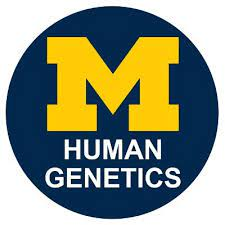

The University of Michigan Solar Car Team is a student engineering project team that researches and designs custom-built solar cars. During the summer of 2022, I was selected as 1 of 20 members to design and race the newest solar vehicle Aevum. As a Race Weather Strategist, I collaborated with my Race Team to build, test and race a 100% solar powered vehicle, Aevum, 3000 miles across the country from New Jersey to California where we pushed the boundaries of sustainable technology and raised awarness around it. During this time, I lead the redesign of our weather simulation softwares developing a set of python scripts that allowed us to gather, analyze, and compress data from multiple weather models and APIs to provide real-time weather forecasting capabilities throughout the race. Also, I communicated with team sponsors such as SolarGIS and Meteomatics faciliating meetings and updates. This experience has allowed me to hone my skills within software development, data analysis, and navigation thoughout high stress situations.
Over the 2023 winter semester, I worked at the University of Michigan Department of Human Genetics serving as a direct assistant to the Administrative Manager Ruth Halsey, supporting all aspects of production and office management. I manage the front desk by handling guest interactions including walk‑ins, phone, and email. Some of my projects I have worked on include implementing a new inventory system that includes details of the department’s supplies and procedures for restocking arranging weekly graduate student seminars/meetings by sending out invitations and providing refreshments and tech support and assiting with imaging of purchase documentation for record retention and Statement of Account Reconciliation.